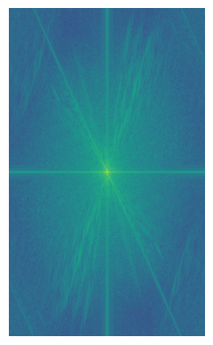

Hybrid Images and Multiresolution Blending
CS 180 project 2.
Introduction
In digital image processing, understanding image frequencies can unlock new possibilities for creative and technical applications. Images are made up of different frequency components, where low frequencies capture the general structure, and high frequencies represent fine details. By manipulating these frequency domains, we can blend images seamlessly, creating visually striking results. In this blog, we’ll dive into the fascinating world of image frequencies, explore various image blending techniques, and demonstrate how these concepts can be used to achieve everything from smooth transitions to high-impact visual effects.
Section 1: Filters
Finite Difference Operator
Finite difference operators play a crucial role in image processing by helping us detect changes and gradients within an image. These operators approximate derivatives by comparing pixel values in a local neighborhood, enabling us to capture edges and other important features.
The operators are mathmatically defined as the following:
$$ D_x = \begin{bmatrix} 1&-1 \end{bmatrix} \quad D_y = \begin{bmatrix} 1\\-1 \end{bmatrix} $$Easy to observe that when convolving with the images, \(D_x\) measures the change in intensity between two horizontal pixels, while \(D_y\) measures that difference in the vertical direction.
In code, we use numpy to define the operators as D_x = np.array([1,-1]) and D_y = D_x.T, and we use scipy.signal.convolve2d to apply them on the images.

The gradient magnitude can be derive by the equation below:
$$ G(x,y) = \sqrt{(D_x(x,y))^2 + (D_y(x,y))^2} $$The result is

One may notice that there are many white noise densed around the lower half of the image, and to suppress the noise, we can choose a threshold (here I choose threshold=0.2 and threshold=0.35) to make all pixels below the threshold go to zero, and all points above get promoted to 1. Here are the results of a low threshold (0.2) and a high threshold (0.35):
Gaussian Low-Pass Filter
However, we notice that by setting threshold and binarizing the picture, we will filter out some real edges along with the white noise. To address this, we can use a Gaussian low-pass filter to preprocess the picture and smooth out some of the high-frequency noises.
We will create a gaussian low-pass filter by specifying the standard deviation \(\sigma\), and since we wish to capture all of the gaussian features (ranging from \(-3\sigma\) to \(3\sigma\)), we can compute the length of the 1-\(d\) gaussian vector as
$$ n = 2\times\lceil 3\sigma \rceil + 1 $$and we can compute the 2-\(d\) gaussian kernel as n = int(2*np.ceil(3*sigma) + 1), gauss = cv2.getGaussianKernel(n,sigma), and gauss2d = gauss @ gauss.T
We can apply gaussian filter \(G\) and \(D_x\) (or \(D_y\)) sequentially to get the smoothed partial derivatives, and then compute the gradient magnitude image using the formula mentioned above. Then, we binarize the image using threshold = 0.09. The results are the follows:
Indeed, the final result has much less white noise and the real edges are all well-preserved.
Additionally, due to the distributivity of convolution, we have
$$ (I(x,y) * G) * D_x = I(x,y) *(G * D_x) $$and we can precompute the partial derivatives of gaussian filter and use them to get smoothed image partial derivative. The results are
We can verify that the results are compatible by computing the \(l\)-2 norm of the difference between the two results. This table shows that the difference is small:
| Difference | Value |
|---|---|
| x-derivative | 2.564316634668458 |
| y-derivative | 0.0011243681585536669 |
| gradient magnitude | 2.503822212657084 |
| binarized gradient | 21.3775577545166 |
(Here, the last entry has larger difference because each imcompatible pixel between binarized images brings the difference up by 1)
Section 2: Frequencies
Image Shapening
By applying the gaussian filter to an image, we can get the low freqencies of the image. And by subtracting the low frequencies from the original image, we can get the edges and details of the image. Therefore, we can edge enhance the image by adding extra high frequencies via the formula below:
$$ G_{\text{enhance}} = (1+\alpha)*e - \alpha*G $$where \(\alpha\) is the degree of enhancement. And
$$ I_{\text{enhance}} = I*G_{\text{enhance}} \iff I + \alpha\times I_{\text{edges}} $$Here are some results of edge enhancement:

To verify the effectiveness of sharpening, we can blur an image first and then try to recover it with sharpening:
Unfortunately, the recovered image is still blurer than the original one, because the original high frequencies are already lost during low-pass filtering.
Here are some other attempts of edge sharpening:
A waterfall image I found at unsplash.com
final result

The Delicate Arch I shot at Utah
final result

Hybrid Images
Introduction
The high frequencies represents details, while low frequencies allow one to recognize the general shape of the objects in an image. These features of different frequencies allow us to create hybrid images.
Hybrid images are static visuals that shift in how they are perceived based on the viewer's distance. The key concept is that high-frequency details dominate when viewed closely, while at greater distances, only the low-frequency, smoother elements are visible. By combining the high-frequency details of one image with the low-frequency components of another, the resulting hybrid image offers varying interpretations depending on the distance from which it is viewed.
Methology and Implementation
To create a hybrid image, we simply extract low frequencies of $I_A$ and high frequencies of \(I_B\) and add them together. Again, we utilize the 2-\(d\) gaussian kernel to filter out certain frequencies and achieve our goal.
Mathematically, given cutoff frequency \(f_c\), we have the following derivation.
Low-pass Filter:
Given origin-centered 2-\(d\) gaussian \(g(x,y) = \frac{1}{2\pi\sigma^2}\exp{-\frac{x^2+y^2}{2\sigma^2}}\), its fourier transform is \(G(u,v) = \exp{-2\pi^2f^2\sigma^2} = G(f)\), where \(f^2 = u^2+v^2\) is the frequency in fourier domain. By the definition of cutoff frequency, we want to find the value of \(\sigma\) such that for all frequencies after \(f_c\), convolution with this gaussian will have the output power has dropped to half of its peak value. That is
$$ \begin{equation*} \begin{aligned} &\exp{-2\pi^2f^2\sigma^2} = \frac{1}{\sqrt{2}}\\ \implies&\sigma = \frac{\sqrt{\ln 2}}{2\pi f_c} \end{aligned} \end{equation*} $$High-pass Filter:
For high-pass, we only want frequencies after \(f_c\) to get well preserved, and the process is similar. Conceptually, we subtract a low-pass gaussian \(g\) from the impulse function \(e\), and our aim is to find the \(\sigma\) of \(g\) such that \(e-g\) has cutoff frequency \(f_c\). In the fourier domain, we have
$$ \begin{equation*} \begin{aligned} &1 - \exp{-2\pi^2f^2\sigma^2} = \frac{1}{\sqrt{2}}\\ \implies &\exp{-2\pi^2f^2\sigma^2} = 1 - \frac{1}{\sqrt{2}} \approx 0.2929\\ \implies & \sigma \approx \frac{1.107}{2\pi f_c} \end{aligned} \end{equation*} $$For given \(\sigma\), we still take \(n = 2\times\lceil3\times\sigma\rceil+1\).
Outputs
Here are some outputs of image hybrition:
Example Test Image
$$f_\text{low}=0.02\quad f\text{high}=0.03$$Original Image:

After Filtered:

Combined:

Fourier Log-Spectrum Analysis:
Original Image 1
High Frequencies of Image 1
Original Image 2
Low Frequencies of Image 2
Hybrid Image
Other Attempts:
the Sather Tower and the Stanford Tower
Original Images:
We choose to align on tower width and take \(f\text{low} = 0.04\), and \(f\text{high}=0.05\), and the result is:

Harry Potter and Lord Voldemort
Original Images:
Here, we choose to align on eyes and take \(f\text{low} = 0.07\), and \(f\text{high}=0.08\), resulting in the image below:
A Failed Attempt: Doraemon and Nobi Original Image:

Choose to align on their eyes and take \(f\text{low} = 0.04\), and \(f\text{high}=0.05\), the result is:
Apparently, this is a failed hybrid image. I think the reason primarily lies in imcompatible head size.
Bells & Whistles
Gaussian Stack, Laplacian Stack, and Image Blending
To create a Gaussian stack, we first specify the layer \(l\) and standard deviation \(\sigma\), then we obtain the gaussian kernel \(g\) as described above. Then, we consecutively apply \(g\) to the image \(I\) for \(l\) times, and store each intermediate result.
The Laplacian stack, on the other hand, is constructed to be the difference between each two layers of the gaussian stack, ie, \(LS[i] \leftarrow GS[i]-GS[i+1]\), with the last layer same as the last image of the gaussian stack (for reconstruction convenience).
My attempt to recreate the famous image blending result Orple and the intermediate stages are show below:
The Recreation of outcomes of Figure 3.42 in Szelski (Ed 2) page 167:

layer title above each image, as it's hard-coded in the visualization helper function)
And the final output of Orple is:
To optimize the final visual effect, I used a feathered mask instead of sharp mask on the Orple creation:

More Blending Results:
Earth-moon Blending:
Through a simple vertical mask (same as the one in Orple), we can fuse the image of earth and moon together seamlessly. The original image (source from Nasa Images):
and the blending result:

Sky Replacement
In my travel to Utah last winter, I took a picture of a car driving in the wild with the background of snowy mountains. Unfortunately, the sky is kind of blank and featureless. We can replace it with some more interesting milky way picture I find at Pixabay:
We can create irregular mask using Photoshop.
then, applying image blending gives a perfect fused starry night image:
Sakura via Delicate Arch
Another cool idea I have is to see the cherry blossom of Washington D.C via the delicate arch. Lukily, I've been to both places and took pictures. Here are the original images:
Unlike the image above, to move the cherry blossom into the arch, we will need to resize the second image and embed it into a black picture of the same size as the first image. We can confirm the position is correct via overlapped images:
Again, we create the customized mask using Photoshop
Finally, we use image blending to get the desired result:
The intermediate laplacian stack of this blending is also shown below: